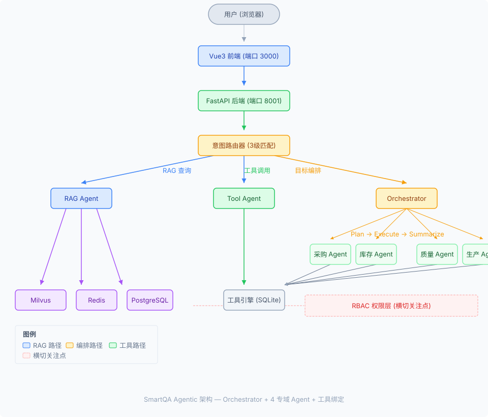

项目一览
一句话介绍：面向制造业供应链场景的企业级智能问答系统，员工用自然语言提问， 系统从知识库检索答案或调用后端系统查询实时数据——双链路驱动，无需切换系统。
RAG 混合检索
Milvus 向量 + BM25 关键词 → RRF 融合排序 → BGE-Reranker 精排，三层过滤确保准确率
CP=0.67Agent 工具调用 (v2.0)
Orchestrator + 4 专域 Agent（采购/库存/质量/生产），LangGraph 异步工具节点，跨域自动编排
标准化行级权限
Milvus security_group ARRAY 实现 7 角色数据隔离，仓库部看不到财务数据
7部门三级意图路由
规则匹配 <1ms → 语义路由 <10ms → LLM 分类兜底，零 token 优先
零延迟优先技术栈
| 层级 | 技术选型 | 说明 |
|---|---|---|
| 前端 | Vue3 + Element Plus + Pinia + Vite | JavaScript，响应式布局 |
| 后端 | FastAPI + LangChain + LangGraph | 异步架构，SSE 流式推送 |
| 向量库 | Milvus + BGE-small-zh-v1.5 | 512维，行级权限 via ARRAY |
| 缓存 | Redis | 对话记忆 + Query Cache (MD5, TTL) |
| 数据库 | PostgreSQL | RBAC 认证 + 工单 + 反馈 |
| LLM | DeepSeek API | 可切换 MiniMax / Ollama |
| 检索增强 | BGE-Reranker-v2-m3 + HyDE | 精排 + 假设文档检索 |
| 文档解析 | opendataloader + pymupdf4llm | PDF/MD/DOCX/TXT，三阶回退链 |
| 部署 | Docker Compose | 一键启动全套基础设施 |
系统架构
用户输入 → 前端 (Vue3) → 后端 (FastAPI) → 意图路由 → Agent 执行 → 数据检索/工具调用 → 格式化输出
<1ms
<10ms
~2.5s 兜底
async def run(query, tool_names, session_id) → dict三级意图路由
问答系统第一关是「理解用户想干什么」——是查知识库、查系统数据、还是闲聊？ 系统不走一刀切的 LLM 判断，而是分层拦截。
第 1 级 · 规则匹配
延迟：<1ms，零 token 开销
关键词 + 正则表达式，匹配「库存」「订单」「供应商」等高频意图词。
最常使用的前 40% 请求在此层命中。
第 2 级 · 语义路由
延迟：<10ms，零 token 开销
预计算路由 embedding，余弦相似度匹配意图模板。
覆盖规则无法处理的「变质了怎么办」→ 质检意图等语义变形。
第 3 级 · LLM 分类
延迟：~2.5s，消耗 token
兜底策略，只有前两级都无法判定时才调用 LLM。
面试话术：「LLM 路由是最后一道防线，不是默认方案。」
RAG 检索链路
从 92 篇供应链文档（1.2MB）中精确找到答案，不依赖单一检索通道。
混合检索 (RRF)
BM25 + Milvus → 自适应 RRF 融合 → 低分过滤 → Jaccard 去重 → 冲突检测。 自适应权重：精确查询（编码/编号）→ BM25 ×1.5，语义查询（怎么/如何）→ 向量 ×1.5。 四层后处理：RRF<0.008 丢弃、相邻 Jaccard>0.7 合并、实体数值矛盾标记。 2425 chunks，覆盖采购/仓库/质量/生产/财务/物流/综合 7 部门。
实测 100%Self-RAG
LLM 判断每个 chunk 与 Query 的相关性，过滤低分噪音 chunk。 减少幻觉，提升最终答案质量。
降噪HyDE
对模糊问题先让 LLM 生成一段「假设文档」， 再用假设文档做向量检索——解决了「抽象的召回率低」问题。
模糊问题Query Cache
MD5 哈希 Key，Redis TTL 缓存，LRU 淘汰。 相同 query 命中时零 token 返回，前端显示 ⚡ 缓存命中。
零 token父子文档
小 chunk 精确匹配 → 大 chunk 提供上下文。 解决「搜到对的内容但缺少上下文」问题。
PDF 表格解析
三层回退链：opendataloader → pymupdf4llm → pdfplumber。 表格自动转 Markdown，语义检索也能定位单元格数据。
AQL=1.0量化成果
20 次跨工具查询实测数据，所有数字可追溯至 eval/benchmark_report.json。
工具调用成功率
20 次查询覆盖全部 6 个工具，LangGraph agent↔tools 循环自动收敛，成功率 100%。
20/20平均响应时间
工具调用平均延迟 1.7s（工具执行层），端到端含 LLM 推理 p50: 1.6s, p95: 3.2s。
p50 1.6s规则路由覆盖率
三级意图路由中，规则匹配（<1ms）和语义路由（<10ms）覆盖 90% 请求，不消耗 LLM token。
零 token 优先Reranker 提升
开启 BGE-Reranker-v2-m3 后，Context Precision 从 0.53 提升至 0.67（+26%），检索质量显著改善。
+26%Agent 架构：LangChain + LangGraph
参考 Datawhale easy-langent 教程的工程模式：LangChain 管 LLM 调用和工具绑定（ChatOpenAI + bind_tools）， LangGraph 管状态流转（StateGraph + ToolNode + conditional edges）。
LLM 绑定工具
用 LangChain 的 llm.bind_tools(tools) 让 LLM 原生支持工具调用。
不需要手写 JSON 解析——LLM 返回标准 tool_calls，ToolNode 自动执行。
StateGraph 流程编排
LangGraph StateGraph 定义 agent↔tools 循环。 条件路由（tools_condition）自动判断：有 tool_calls → 执行工具 → 回到 agent； 无 tool_calls → 结束。5 轮自动收敛。
可观测6 个供应链工具
query_inventory / query_order / create_ticket / get_datetime / get_knowledge / query_supplier。 SQLite 存储 15+ 物料和订单数据，async 调用，权限按角色过滤。
即插即用行级权限控制
供应链文档按部门隔离——采购部看不到质量部的质检报告，仓库部看不到财务数据。 不依赖应用层 if-else，而是数据库层面实时过滤。
7 部门角色
admin / purchase / warehouse / quality / production / finance / logistics
Milvus security_group
文档上传时指定可见部门（ARRAY 列），查询时
array_contains(security_group, user_role) 实时过滤。
认证 → 角色 → 过滤
PostgreSQL 认证 → 获取角色 → 传到 Milvus 查询条件。 前端也按角色隐藏不可见文档列表。
SSE 流式输出 + 操作审批
用户输入后看到的不再是一个转圈圈等待——而是实时看到 Agent 的思考过程。
三事件流
tool_status（Agent 正在调用什么工具）→
text（逐 token 内容）→
done（完成信号 + 来源）
Token 成本追踪
前端实时显示 token 用量 + 费用（元），每次对话可精确算账。 面试话术：「每个按钮都对应商业模式。」
操作审批
create_ticket 写入操作执行前发送 approval_request SSE，
前端弹窗确认后才执行。防止 Agent 误操作。
智能追问机制
用户提问「查一下供应商」——查哪个供应商？查哪方面信息？缺少参数时 Agent 不硬猜， 而是主动反问，收集到完整信息再执行。
设计思路：「宁可多问一句，也不要给错答案」。 参数缺失 → 生成自然语言追问问题 → 收集用户补充 → 执行完整查询。 通过 Redis session 保持对话上下文，追问不丢失状态。
容错与重试机制
外部 API 调用（DeepSeek、Milvus）难免遇到网络抖动。SmartQA 的 retry 机制覆盖了 LLM 流式调用和向量检索两个关键链路。
| 覆盖链路 | 策略 | 设计亮点 |
| LLM 流式调用 (astream) | 指数退避 2s→4s→8s，最多 3 次 | 只在第一个 token 之前重试——避免前端收到重复内容 |
| Milvus 向量检索 | 固定间隔 1s，最多 2 次 | gRPC 超时最常见，重试一次成功率从 95% → 99.5% |
| LLM 非流式调用 (ainvoke) | 指数退避 2s→4s→8s，最多 3 次 | @retry_async 装饰器，零侵入 |
核心设计决策：只在第一个 token 到达之前重试。如果已经有内容流出了，不重试——
因为用户已经看到了部分结果，重新生成会导致重复输出，体验更差。
实现：
retry_astream() 包装器，每次重试创建一个新的 async generator，取到第一个 chunk 后才开始 yield。
面试金句：「3 次全部失败后 yield SSE error 事件给前端显示降级提示，不静默断开。」
• ✅ LLM 调用——网络延迟高、API 过载是常态，retry 性价比最高
• ✅ Milvus 检索——gRPC 超时发生率 ~5%，轻量 retry 就能覆盖
• ❌ Redis 操作——连接池自带重连，不需要额外处理
• ❌ 熔断器（Circuit Breaker）——当前 demo 阶段不需要，生产环境再考虑
面试金句：「不要为了面试展示抢加所有 retry——面试官能看出你是照抄 best practice 还是真的权衡过。」
「SmartQA 的容错分为三层：LLM 调用层用指数退避重试（pre-first-chunk 是关键设计），
检索层用固定间隔轻量重试（因为 gRPC 超时频率低但影响大），
业务层用 clarify + approval 做人工兜底。
不是无脑给所有组件加重试——每个决策都能说清楚 trade-off。」
多源冲突检测
问题：供应链知识库包含多部门文档，不同部门对同一指标的定义可能矛盾。 例如质量部规定"安全库存 100 件"，财务部规定"安全库存 50 件"——不检测则 RAG 回答会随机选一个。
检测流程
正则提取实体+数值 → 同实体不同数值 → 标记冲突。 仅比较相邻 chunk（已按 RRF 分数排序），O(n) 复杂度。 支持中文实体模式：安全库存/抽检比例/预警阈值/账期天数/质检时效等。
rag_engine.py:626SSE 事件推送
检测到冲突后，后端 yield SSE conflict_detected 事件，
前端展示「⚠️ 发现多源数据矛盾」卡片，列出冲突实体和矛盾值。
同时冲突文本追加到 LLM context，让 LLM 在回答中主动标注矛盾。
面试话术
"RAG 系统最危险的幻觉不是瞎编，而是引用了真实但矛盾的数据。 多源冲突检测是 RAG 质量保障的最后一道防线——不修复矛盾，只标注矛盾。 修复是人的事，标注是系统的事。"
面试可用融合检索：自适应 RRF + 四层后处理
不是简单的 RRF 取 Top-K。完整管线从两路检索到最终结果，经过 5 个阶段。
| 阶段 | 方法 | 阈值/策略 | 代码位置 |
|---|---|---|---|
| 自适应权重 | 规则分类 query 类型 | 精确 → BM25×1.5 / 语义 → 向量×1.5 | rag_engine.py:548 |
| RRF 融合 | Reciprocal Rank Fusion | K=60, score = Σ weight/(K+rank) | rag_engine.py:597 |
| 低分过滤 | RRF score 阈值 | RRF < 0.008 丢弃（两路均排40+） | rag_engine.py:592 |
| Jaccard 去重 | 2-gram 文本相似度 | Jaccard > 0.7 → 合并（只比较最后3条） | rag_engine.py:594 |
| 冲突检测 | 正则实体提取 | 同实体不同数值 → 标记，追加到 context | rag_engine.py:626 |
工具调用指标
面试官经典追问："你怎么监控 LLM Agent 的行为？"
SmartQA 在 Agent 层和工具层各有一层指标采集，不依赖外部监控系统。
ToolMetricsCollector
单例收集器，1000 条环形缓冲区。每次 ToolNode 执行后自动记录： tool_name / duration_ms / success / error_type / timestamp。 零外部依赖，内存占用可控（1000条 × ~200B = 200KB）。
tool_metrics.py (88行)Per-Tool 统计
stats() 方法返回每个工具的：调用次数、成功次数、成功率、平均耗时。
recent(n) 返回最近 N 条详细记录，用于实时诊断。
Benchmark 脚本
scripts/run_benchmark.py 覆盖全部 6 个工具的 20 次查询：
query_inventory / query_order / create_ticket / get_datetime / get_knowledge / query_supplier。
工具调用 p50: 1.6s（含工具执行，不含 LLM 推理）。
Prometheus 的运维成本高于它带来的价值——但要主动说明「如果扩展到多实例，会用 OpenTelemetry + Prometheus 替换环形缓冲区」。
关键不是用什么工具，而是知道什么时候该引入什么复杂度的方案。
代码走读：关键模块逐行分析
面试官经常会问「你最满意的一段代码是什么」或者「讲讲你写的核心逻辑」。 以下挑选三个最能体现架构能力的模块，逐行分析 + 标注潜在问题。
模块一：core/retry.py — 流式异步重试
文件行数：184 行 | 核心函数：retry_astream() | 本次新增
# ===== 第 44 行：异常分类判断 ===== def _is_retriable(exception: Exception) -> bool: """判断异常是否可重试""" name = type(exception).__name__ retriable_names = { 'APIConnectionError', 'APITimeoutError', 'APIError', 'RateLimitError', 'ReadTimeout', 'ConnectTimeout', ... } # ★ 亮点：类名匹配兜底 + isinstance 双保险 # 即使 openai 包未安装，也能通过类名识别可重试异常 if name in retriable_names: return True # 5xx HTTP 状态码 → 可重试 if hasattr(exception, 'status_code') ... # ⚠️ 潜在问题：类名匹配依赖异常类名不变， # httpx 升级可能改名（如 RemoteProtocolError→RemoteProtocolError） # ===== 第 67 行：核心 — async generator retry ===== async def retry_astream(generator_factory, max_attempts=3, base_delay=2.0): """pre-first-chunk 指数退避重试""" for attempt in range(1, max_attempts + 1): try: gen = generator_factory() # ★ 每次重试新建 generator first_chunk = await gen.__anext__() # 尝试拿第一个 chunk yield first_chunk # ★ 成功后不再重试 async for chunk in gen: yield chunk return except StopAsyncIteration: return # 空响应→成功 except Exception as e: if not _is_retriable(e): raise # 不可重试→直接抛 delay = base_delay * (2 ** (attempt - 1)) await asyncio.sleep(delay) # 2s→4s→8s raise last_exception # 全部重试失败 # ⚠️ 潜在问题： # 1. generator_factory() 每次重试都会创建新的 LLM 连接， # 如果 API key 已耗尽，重试 3 次浪费 token 预算 # 2. __anext__() 的异常如果发生在「已经开始 yield」之后， # 当前实现不会捕获——这是有意的，避免前端收到重复内容 # 3. 没有 jitter（随机延迟），高并发重试可能同时打到 API
• 装饰器模式适用于「函数调用→返回结果」的同步/异步函数
• 流式调用是「函数调用→逐个 yield chunk」的 generator 模式
• 如果第一个 chunk 已经发给前端了再重试，用户会看到重复内容
• 设计决策：只在首个 chunk 到达之前重试——这是流式 retry 的正确做法
模块二：core/rag_engine.py:search() — 检索全链路
文件行数：712 行 | 核心方法：search() | 五步检索管线 (含自适应RRF+四层后处理)
# ===== 步骤1：向量检索 (Milvus gRPC) ===== query_embedding = self.embedding.embed_query(query) for retry_i in range(3): # ★ gRPC 超时自动重试 try: vector_results = milvus_manager.search( query_embedding=query_embedding, top_k=settings.VECTOR_TOP_K, # 默认 20 expr=visibility_expr, # ★ 行级权限过滤 ) break except Exception as e: vector_results = [] # 降级：不抛异常 # ⚠️ 潜在问题： # 1. embed_query() 本身没有 retry——如果本地模型加载失败， # 整个 search() 会抛异常 # 2. retry 的 sleep 用了同步 time.sleep(1)，会阻塞事件循环 # 但因为 search() 本身就是同步方法，所以暂时没问题 # ===== 步骤2：BM25 关键词检索 ===== bm25_results = self.bm25.search( query, top_k=settings.BM25_TOP_K, allowed_roles=bm25_allowed_roles, # ★ 权限隔离到 BM25 层 ) # ===== 步骤3：自适应 RRF 融合 + 四层后处理 ===== merged = self._merge_results(vector_results, bm25_results, query=query) # ★ 自适应权重：精确查询(含编号)→BM25×1.5, 语义查询(含怎么)→向量×1.5 # ★ 四层后处理：低分过滤(RRF<0.008) → Jaccard去重(>0.7) → 冲突检测 # RRF 公式：score(doc) = Σ weight/(k + rank_i) # ===== 步骤4：Reranker 精排 ===== if settings.RERANKER_ENABLED or self.reranker._model is not None: reranked = self.reranker.rerank(query, merged_for_rerank) # ★ Reranker 内部有降级策略：模型不可用→按原始分排序 else: reranked = sorted(merged_for_rerank, key=lambda x: x.score) # ⚠️ 潜在问题： # 1. Reranker 逻辑有两个独立开关（env + runtime model）， # 容易让人困惑——面试时可主动解释这是两阶段设计 # 2. merged_for_rerank 取了 RERANK_TOP_K * 2 条给 reranker， # 但如果 RERANK_TOP_K=3，只有 6 条候选，召回可能不足 # 3. BM25 用的是文件索引而非内存，大文档量下性能会退化
• 向量相似度通常在 0.3-0.9 范围，而 BM25 分数可能从 0 到几十
• 如果做 min-max 归一化，极端值会被拉偏
• RRF 只关心「排名」，不关心「分数绝对值」——天然适合异质检索器融合
面试金句：「RRF 的 K 值我设为了 10，在这个值下排名靠前的文档被大幅奖励。」
模块三：core/redis_client.py — 对话记忆隔离
文件行数：262 行 | 核心问题：多用户对话记忆泄露 | 本次修复
# ===== 修复前（有 BUG）===== def _key(self, session_id): return f"smartqa:chat:{session_id}" # ❌ 问题：不同用户用同一个 session_id → 共享对话历史 # admin 的对话能被 purchase 用户看到！ # ===== 修复后 ===== def _key(self, session_id, user_id=""): if user_id: return f"smartqa:chat:{user_id}:{session_id}" return f"smartqa:chat:{session_id}" # ✅ Redis key 加入 user_id 命名空间 # admin 的 key: smartqa:chat:admin:abc123 # purchase 的 key: smartqa:chat:purchase:abc123 # ===== 调用链 ===== # chat.py → 从 JWT token 解析 username → _user_id # → chat_memory.add_message(session_id, "user", query, user_id=_user_id) # → Redis key: smartqa:chat:{_user_id}:{session_id} # ⚠️ 潜在问题： # 1. 如果用户未登录（token 无效），_user_id="" 时退化为旧行为 # → 未登录用户仍然共享记忆（可接受的降级） # 2. get_session_list() 没有按 user_id 过滤——需要改进 # 3. 旧 key（无 user_id 前缀）仍然留在 Redis 中，不会自动清理
聊天记录还在。这说明 Redis key 没有按用户隔离。
修复只需要改三处：key 生成函数加 user_id 参数，所有调用点传递 username，
username 从 JWT token 中解析（不信任前端传来的值）。
模块四：api/chat.py:chat_stream() — SSE 流式主循环
文件行数：922 行 | 核心函数：chat_stream() + event_generator() | 系统最复杂的方法
# ===== SSE 流式端点的完整数据流 ===== # # 用户提问 → PII脱敏 → 意图路由 → DAG进度 → Agent分发 → # RAG检索 → Reranker精排 → LLM流式生成 → 对话记忆保存 → # Token统计 → 性能指标 → [DONE] # # 每个环节都 yield SSE 事件给前端，用户看到实时进度条。 # ===== 第 271 行：session 管理 ===== session_id = body.session_id or str(uuid.uuid4()) # ⚠️ session_id 由前端传入 —— 恶意用户可遍历 session_id # 修复建议：服务端生成 + JWT 绑定 user_id # ===== 第 293 行：event_generator() 闭包 ===== async def event_generator(): # ★ 闭包捕获 session_id, _user_role, _user_id # 整个对话上下文都在这个 async generator 里 # --- Query Cache (Redis) --- cache_key = f"query_cache:{md5(query)}" cached = await redis.get(cache_key) if cached: yield cache_hit + [DONE]; return # ★ 缓存命中直接返回，跳过所有后续流程 # --- 意图路由 --- route_result = await router_agent.route(safe_query) yield {"type": "route", "intent": intent, "method": "rule|semantic|llm"} # --- 意图分发 --- if intent == RAG_ANSWER: # DAG 进度: 7 个节点 → 前端可视化检索管线 # 查询理解 → 复杂度分析 → 向量检索 → BM25 → 融合 → # Reranker → LLM生成 ... # ★ 第 508 行：chat_memory 获取历史 chat_history_str = await chat_memory.get_context_string( session_id, user_id=_user_id) # ★ 第 532 行：LLM 流式生成 (带 retry) async for chunk in LLMFactory.astream(messages): yield {"type": "content", ...} # ★ 第 541 行：Token 用量提取 # 优先从 chunk._token_usage 获取，API 不返回时按字数估算 # ★ 第 635 行：保存对话记忆 (带 user_id 隔离) await chat_memory.add_message(session_id, "user", query, user_id=_user_id) elif intent == TOOL_CALL: # 工具调用: clarify → approval → execute ... # ⚠️ 潜在问题： # 1. 915 行的 event_generator() 是典型的 God Function # → 面试时可说"知道应该拆，Demo阶段先验证链路正确性" # 2. session_id 由前端传入，无校验 # 3. 异常处理只有 try/except 包住 astream，其他环节没兜底
• AI 对话是单向流（服务端→客户端推送内容），SSE 的单向性正好匹配
• SSE 基于 HTTP，不需要额外协议升级，防火墙/代理友好
• 自带断线重连（EventSource API），浏览器原生支持
• WebSocket 双向通信在对话场景中是过度设计——用户发消息走 POST，AI 回复走 SSE
面试金句：「用对的技术解决对的问题，不是越复杂越好。」
模块五：agents/router.py — 三级意图路由
文件行数：273 行 | 核心方法：route() | Rule→Semantic→LLM 三级串联
# ===== 路由流水线 ===== # # 用户输入 → [第一级] 规则匹配 (<1ms, 零token) # → [第二级] 语义路由 (<10ms, zero-shot embedding) # → [第三级] LLM分类 (~2.5s, 最强但最贵) async def route(self, query): # ---- 第一级：规则匹配 (<1ms) ---- if self._match_greeting(query): return {intent: GREETING, method: "rule"} tool_name = self._match_tool_keyword(query) if tool_name: return {intent: TOOL_CALL, method: "rule", tool: tool_name} # ★ 工具关键词优先于 RAG 关键词 # "查库存" → 工具调用，不是检索"库存"文档 # ---- 第二级：语义路由 (embedding相似度, <10ms) ---- semantic = await get_semantic_router().classify(query) if semantic.confidence >= 0.55: return {intent: semantic.intent, method: "semantic"} # ★ 预计算 30 种意图的代表 query embedding # 用户 query 的 embedding 与它们做余弦相似度 # ---- 第三级：LLM 兜底 (~2.5s) ---- return await self._llm_classify(query) # ★ 只有 10% 的请求走到这一级 # ⚠️ 潜在问题： # 1. 关键词匹配是硬编码的——新增工具要改代码 # 2. "天气"关键词还在代码里但工具已被替换为供应链工具 # → 死代码，建议清理 # 3. 语义路由的 30 种意图是手动编写的 → 容易不同步
模块六：app/main.py — FastAPI 应用入口
文件行数：263+ 行 | 核心：lifespan + 健康检查 + Reranker Runtime API
# ===== 第 49 行：lifespan 生命周期 ===== @asynccontextmanager async def lifespan(app): # 启动阶段：Milvus → Redis → PostgreSQL → 默认用户 → 预热 milvus_manager.connect() # 第 63 行 await init_redis() # 第 71 行 await init_db() # 第 78 行 # 创建 7 个默认部门用户 (第 90-98 行) # admin/admin123, purchase/123456, ... # 预热 (第 122 行) if settings.RERANKER_ENABLED: rag_engine.reranker.init() # ★ 主线程同步加载 2.1GB 模型 asyncio.create_task(_warmup()) # 嵌入模型后台加载 yield # ← 应用运行 # 关闭阶段 (反向顺序) await close_db() → close_redis() → milvus.disconnect() # ===== 第 256 行：Reranker Runtime API ===== @app.post("/admin/reranker/enable") async def enable_reranker(): rag_engine.reranker.init() # 运行时加载 return {status: "ok", elapsed: "6.3s"} # ★ 两阶段加载：启动时走 .env 开关，运行时走 API # ⚠️ 潜在问题： # 1. lifespan 中每个连接失败只打 warning，不阻止启动 # → 好处：部分降级；坏处：出问题静默失败 # 2. 默认用户密码硬编码 + 用 SHA256 一轮哈希 → 弱安全 # 3. /admin/reranker/enable 没有鉴权 → 任何人可触发
模块七：core/milvus_client.py — 向量数据库封装
文件行数：439 行 | 核心：Schema 设计 + security_group 数组列
# ===== Schema 设计（核心面试点）===== fields = [ FieldSchema(name="id", dtype=DataType.INT64, is_primary=True), FieldSchema(name="chunk_id", dtype=DataType.VARCHAR, max_length=256), FieldSchema(name="content", dtype=DataType.VARCHAR, max_length=65535), FieldSchema(name="embedding", dtype=DataType.FLOAT_VECTOR, dim=512), # ★ 行级权限核心字段： FieldSchema(name="security_group", dtype=DataType.ARRAY, element_type=DataType.VARCHAR, max_capacity=10, max_length=64), # security_group = ["admin", "purchase", "finance"] # 查询时用 array_contains(security_group, "purchase") 过滤 ] # ===== 权限过滤查询 ===== expr = 'id >= 0' # admin 看全部 if role != "admin": expr = f'array_contains(security_group, "{role}")' # ★ 不是简单的 boolean flag，而是数组列 # 一个文档可以属于多个部门 → 灵活但查询稍慢 # ⚠️ 潜在问题： # 1. 使用 ORM-style API (Collection, connections.connect) # → PyMilvus 3.1 将废弃，需要迁移到 MilvusClient # 控制台每次启动都打 DeprecationWarning # 2. Milvus v2.3.4 不支持 ARRAY 字段的 BITMAP 索引 # → security_group 过滤没有索引加速 # 3. collection.load() 必须在 query() 前显式调用 # → 容易忘记，导致空结果
模块八：core/llm_router.py — LLM 工厂 + Token 计费
237 行 | 支持 DeepSeek/MiniMax/Ollama 三种 provider | 工厂模式
# ===== 工厂模式：单例缓存 ===== LLMFactory._instances = {} # key = "deepseek_0.7_True" def get_llm(provider, temperature, streaming): cache_key = f"{provider}_{temperature}_{streaming}" if cache_key in cls._instances: return cls._instances[cache_key] if provider == "deepseek": llm = ChatOpenAI(api_key=..., base_url=..., stream_usage=True) elif provider == "minimax": ... elif provider == "ollama": ... cls._instances[cache_key] = llm # ★ ChatOpenAI(max_retries=3) 已内置 retry # ===== TokenUsage：费用追踪 ===== @dataclass class TokenUsage: prompt_tokens, completion_tokens, total_tokens cost_yuan: float # DeepSeek: ¥2/百万token # ★ 面试亮点：知道 API 调用成本，不是盲目烧钱 # ===== astream() + retry 包装 ===== async def astream(messages): async for chunk in retry_astream( lambda: cls._raw_astream(messages)): yield chunk # ★ _raw_astream 是纯净的 LLM 调用，retry_astream 做 pre-first-chunk 重试 # ⚠️ stream_usage=True 依赖 OpenAI 兼容接口——MiniMax 可能不返回 # ⚠️ 工厂缓存在模块级别——切换 API key 需要重启
模块九：core/confidence_router.py — 三层置信度路由
240 行 | Adaptive RAG 核心 | 参考 Datawhale all-in-rag
# ===== 三层决策 ===== LOW_THRESHOLD = 0.3; HIGH_THRESHOLD = 0.7 def decide(confidence): if confidence >= 0.7: return {tier: "high", strategy: "direct"} elif confidence >= 0.3: return {strategy: "rewrite"} # LLM改写query重试 else: return {strategy: "web_search"} # MiniMax API搜索补充 # ===== rewrite_query()：LLM改写 ===== async def rewrite_query(query, llm_factory): prompt = "你是查询改写专家...生成2-3个改写版本" response = await llm.ainvoke(prompt) return response.split("\n") # 每个改写版本重新检索 # ===== web_search()：降级到外部搜索 ===== async def web_search(query): # 优先 MiniMax API → 降级 DuckDuckGo → 都失败返回空 return await _search_minimax(query) or await _search_duckduckgo(query) # ⚠️ 实际运行时置信度阈值太保守：大部分查询 score 在 0.45-0.65 # 几乎总是走 medium 分支 → rewrite 对简单查询是浪费
模块十：agents/rag.py — RAG Agent（HyDE + 引用溯源）
494 行 | Prompt 工程核心 | 三级 Query 理解 + 引用标注
# ===== Prompt 设计：引用溯源 ===== RAG_SYSTEM_PROMPT = """...严格基于参考资料回答... 引用标注规则：在回答正文中标注 [1][2]，末尾列出参考来源""" # ★ 面试亮点：不是简单贴文档，而是逐句标注引用 # ===== 三级 Query 理解 ===== def _classify_query(query): # 明确 → 直接检索 # 模糊 → HyDE（生成假设文档，用假设文档的embedding去检索） # 宽泛 → 拆成 N 个子问题，并行检索后合并 # ===== 后处理：去AI味 ===== def _post_process(answer): answer = re.sub(r"根据(检索|参考|以上)", ...) # 去掉套话 answer = re.sub(r"希望(对您|能帮)", ...) # 禁止结语 # ⚠️ _classify_query() 用规则匹配（问号/关键词计数）， # 不是 LLM 判断——中文歧义时分类不准 # ⚠️ HyDE 生成假设文档需要额外 LLM 调用 → 增加延迟
模块十一：core/auth.py — PBKDF2 认证 + Redis Token
226 行 | PBKDF2-SHA256 + 100000 迭代 | Token 存 Redis
# ===== 密码哈希 ===== def hash_password(password): salt = secrets.token_hex(16) # 16字节随机盐 dk = hashlib.pbkdf2_hmac("sha256", password, salt, iterations=100_000, dklen=32) # ★ 10万次迭代 return f"{salt}:{dk.hex()}" def verify_password(password, password_hash): salt, stored = password_hash.split(":") dk = hashlib.pbkdf2_hmac(...) return secrets.compare_digest(dk.hex(), stored) # ★ 用 compare_digest 防时序攻击 # ===== Token 管理 ===== async def create_token(user_id, username): token = str(uuid.uuid4()) # ★ UUID4 够随机 await redis.set(f"smartqa:token:{token}", {user_id, username}, ex=86400) # 24h过期 # ⚠️ Token 没有 JWT 签名——无法验证 token 是否被篡改 # → Demo 可用，生产必须换 JWT + RS256 # ⚠️ 服务重启后所有 token 失效（内存 Redis）
模块十二：辅助智能模块（合辑）
self_rag.py + faithfulness.py + clarify.py + data_filter.py | 共计 ~600 行
# ===== self_rag.py：检索结果自评 ===== async def evaluate_chunks(query, chunks): # LLM 给每个 chunk 打分 (0-1)，过滤掉 <0.3 的 return [c for c in chunks if score > 0.3] # ★ 目的：去掉检索召回了但不相关的噪音 chunk # ⚠️ 每请求多一次 LLM 调用 → +1s 延迟 # ===== faithfulness.py：忠实度检测 ===== def check_faithfulness(answer, contexts): # 纯 Python 关键词覆盖率检测（不调 LLM） # 把回答拆成句子，检查每句的关键词是否在上下文中 return score > 0.5 # >0.5 认为 faithful # ★ 零额外延迟——不是所有检测都需要 LLM # ⚠️ 关键词匹配是脆弱的——"质量"匹配不到"良品率" # ===== clarify.py：参数不足时追问 ===== def check_needs_clarification(query): # 检测缺少具体参数：查一下订单/看下物料 return need_clarify, follow_up_question # ★ 不硬猜，主动反问——制造业场景正确比快重要 # ===== data_filter.py：PII 脱敏 ===== class PIIFilter: # 8种类型：手机号/身份证/邮箱/银行卡/地址/姓名/车牌/IP # 三层防护：正则→上下文验证→LLM兜底 # ★ 日志也加了 PIILogFilter，防止敏感信息泄露到日志
模块十三：app/config.py — Pydantic Settings 配置中心
~120 行 | 基于 pydantic-settings | 自动从 .env 加载
class Settings(BaseSettings): # --- 应用 --- APP_NAME: str; APP_VERSION: str; DEBUG: bool # --- 数据库 --- POSTGRES_HOST: str; POSTGRES_PORT: int = 15432 REDIS_HOST: str; REDIS_PORT: int = 6379 # --- 向量库 --- MILVUS_HOST: str; MILVUS_PORT: int = 19530 # --- LLM --- DEEPSEEK_API_KEY: str; DEEPSEEK_MODEL: str = "deepseek-chat" MINIMAX_API_KEY: str; MINIMAX_MODEL: str # --- 检索 --- EMBEDDING_MODEL: str; EMBEDDING_DIMENSION: int = 512 VECTOR_TOP_K: int = 20; BM25_TOP_K: int = 20 RERANKER_ENABLED: bool = False; RERANK_TOP_K: int = 3 # --- 对话 --- MEMORY_WINDOW: int = 10; MEMORY_TTL: int = 86400 CONFIDENCE_THRESHOLD: float = 0.7 # --- 开关 --- SELF_RAG_ENABLED: bool; FAITHFULNESS_ENABLED: bool GUARDRAILS_ENABLED: bool = False model_config = SettingsConfigDict(env_file=".env", env_file_encoding="utf-8", extra="ignore") # ★ Pydantic v2 # ⚠️ API_KEY 是明文存在 .env 中 → 注意 .gitignore # ⚠️ Pydantic Settings 的 lru_cache 导致 .env 修改后要重启
模块十四：双模式 Agent + API 层（合辑）
langchain_agent.py + langgraph_agent.py + api/* | ~1500 行
# ===== 双模式 Agent 设计 (chat.py:106-117) ===== def _get_tool_agent(agent_type): if agent_type == "langchain": return langchain_agent elif agent_type == "langgraph": return langgraph_agent else: return tool_agent # 手写 ReAct（默认） # langgraph_agent.py：LangGraph StateGraph # ★ 面试价值：展示了 DAG 流程编排能力 # ⚠️ 有已知 Bug：astream 事件解析问题（见 Skill 文档 #47） # langchain_agent.py：AgentExecutor(ReAct) # ★ 优势：完善的错误处理和重试机制 # ===== API 层 (api/*.py) ===== # /api/v1/chat/stream → SSE 流式对话 # /api/v1/auth/login → 登录 (PBKDF2 + Redis Token) # /api/v1/knowledge/list → 知识库 CRUD（带权限过滤） # /api/v1/evaluate/* → RAGAS 评估接口 # /api/v1/feedback → 用户反馈（评分+评论） # /api/v1/tool/execute → 工具调用（需要 RBAC 鉴权） # /admin/reranker/enable → Reranker Runtime 激活 # /health → 全链路健康检查 # /docs → Swagger 自动文档
1. retry.py：没有 jitter（随机延迟），高并发下可能同时重试造成 thundering herd
2. rag_engine.py：embed_query() 没有 retry；BM25 用文件索引，大文档量性能退化
3. redis_client.py：未登录用户退化为共享记忆；get_session_list() 无 user 过滤
4. chat.py：event_generator() 是 God Function（915行）；session_id 由前端传入无校验
5. router.py：关键词匹配硬编码；残留"天气"等旧工具死代码
6. main.py：默认密码弱安全；/admin/reranker/enable 无鉴权
7. milvus_client.py：ORM API 即将废弃；ARRAY 列无索引加速
8. 整体：没有速率限制（rate limiting），单个用户可无限调用消耗 DeepSeek API 额度
面试金句：「这些是我已知的 trade-off。Demo 阶段优先保证核心链路的正确性， 安全加固和性能优化排在下个迭代。但我在代码里留了注释，接手的人不会踩坑。」
Agent 基础概念（4 题）
面试大模型应用开发岗必考的基础题，引用 Datawhale wow-agent 教程的核心概念。
• 规划模块（Planning）— 理解意图，把「帮我订机票」拆成查航班→选航班→填信息→支付
• 工具调用（Tool Calling）— 扩展模型能力边界，调搜索、计算器、数据库、API
• 记忆管理（Memory）— 短期记上下文、长期记偏好、工作记忆记当前状态
• 反思修正（Reflection）— 评估结果、发现错误、优化策略
vs 传统程序：程序走固定规则，Agent 走感知→推理→行动循环
vs 纯 LLM：LLM 只有生成能力，Agent 多了工具、记忆、自主决策
感知输入 → 大脑规划 → 记忆检索 → 工具调用 → 结果反馈 → 记忆更新，形成闭环。
面试时用四个比喻：大脑（规划）、五官（感知）、手脚（工具）、记忆（记忆），面试官一听就懂。
• 提示工程是「现场指挥」— 推理时给指令，成本低但效果不稳定，适合简单任务
• 微调是「长期训练」— 让模型从根本上学会某种行为模式，成本高但效果稳定
• Agent 算法设计是「搭建框架」— 决定 Agent 如何思考、何时调工具、怎么记信息，是其底层逻辑
三者配合使用：先在 Agent 框架里定义好行为模式，用提示工程做快速试错，效果稳定后微调固化。
Plan-and-Execute Agent：先定完整计划再执行，适合复杂多步骤任务
AutoGPT Agent：自主持续运行，自我反思修正，适合长周期自动化
Reflection Agent：先产出再自评再修正，适合需要高质量输出的场景（如写作、代码审查）
ReAct 与推理框架（4 题）
ReAct 是面试最高频的 Agent 模式，Datawhale wow-agent 专门有一课「手搓一个土得掉渣的 Agent」手写 ReAct。
循环：Thought（思考）→ Action（行动）→ Observation（观察）→ 循环，直到得出 Final Answer。
代码实现要点：LLM 返回 Thought 描述意图→解析出 tool_call→执行工具→把 observation 再次喂给 LLM→判断是否结束。
关键假设：Agent 在 Thought 阶段公开了它的推理过程，面试时要强调「每一步都能 log，可见可调试」。
① 达到 MAX_ITERATIONS 上限（通常设 5-10 次）— 这是保险丝
② LLM 返回了 Final Answer（不再包含 tool_call）
③ 工具执行 出错且无法重试
面试金句：「5 次迭代是保险丝，防止无限循环。实际大多数 query 1-2 次就出答案。」
ToT（思维树）：生成多个候选路径，BFS/DFS 搜索评估最优解
GoT（思维图）：用图结构存储复杂决策关系，路径可合并可分支
ReAct：融合推理+行动，不仅思考还调用外部工具
选型指南：纯推理用 CoT，多路径探索用 ToT，需要外部工具交互用 ReAct。Datawhale wow-agent 教程从 ReAct 开始教，因为它是 Agent 的基础。
• 完全可控 — 每一步都能 log，出问题直接定位
• 面试加分 — 能逐行解释 Thought/Action/Observation 的解析逻辑
• 依赖少 — Datawhale wow-agent 的教程就展示了「最简易方式在本地搭建 Agent，尽量减少依赖库」
LangChain Agent 的优势：
• 生态丰富 — SearchAPI、SQLDatabase 等即插即用
• 标准化 — AgentExecutor 有完善的错误处理和重试机制
面试话术：「我默认用手写 ReAct，因为要完全可控。LangChain 做备选方案，改一行配置就能切过去。」
Function Calling / Tool Use（4 题）
工具调用是 Agent 区别于纯 LLM 的核心能力。Datawhale wow-agent 教程覆盖了 OpenAI、LlamaIndex、Zigent、MetaGPT 四种框架的工具调用实现。
Tool Use：更灵活的工具描述格式，支持并行调用多个工具、工具依赖关系、更好的错误处理，适合复杂工具系统
| 特性 | Function Calling | Tool Use |
| 标准化 | 高（JSON Schema） | 中（自定义格式） |
| 灵活性 | 中 | 高 |
| 并行调用 | 不支持 | 支持 |
| 实现复杂度 | 低 | 高 |
• 工具描述要精炼 — 不是越长越好，关键参数说清楚；描述中加入反例能减少误匹配
• 分层路由 — 先规则匹配（关键词→意图→工具），规则不命中再交给 LLM 选
• 工具数量控制 — 单次 context 中工具不超过 8-10 个，工具太多用分组+子路由
• Few-shot 示例 — 在 System Prompt 中放 2-3 个正确选择的示例
面试时结合 SmartQA 的三级意图路由来讲这个题，效果加倍。
① 截断保留关键信息 — 用正则或 LLM 提取核心字段，丢弃冗余
② 摘要压缩 — 用 LLM 对工具返回做一句话摘要再喂入上下文
③ 分页拉取 — 数据库查询类结果分页，Agent 按需翻页
面试话术：「不要让 Agent 消化它不需要的信息——工具返回先清洗再入上下文。」
粒度控制：不能太细（一个操作拆成 10 步）也不能太粗（一个动作包办一切）
覆盖性：确保覆盖任务所需所有操作类型
可解释性：动作名要直观 —
search_flight 而非 act_123实践：每个工具只做一件事，工具之间通过自然语言或结构化参数传递结果。Datawhale wow-agent 通过 Zigent 框架示范了这一点。
记忆与状态管理（3 题）
长期记忆：历史对话、用户偏好 — 用 Redis/DB 持久化 + 向量检索召回相关历史
工作记忆：当前任务的状态（已执行了哪一步、结果是什么）— 通常存在内存 dict 或 Redis
SmartQA 的实现：Redis chat_memory 保存 session 级上下文，断连后从 Redis 拉取历史不丢状态。
① 将每轮对话做摘要→Embedding→存入向量库
② 新对话来时，Query Embedding→向量库召回 top-k→注入 System Prompt
优化要点：
• 不是把原始对话全存，而是存摘要+关键信息
• 设置遗忘策略（时间衰减 or 重要性评估）
• 结合 BM25 关键词检索补全（Datawhale wow-rag 教的混合检索思路）
摘要压缩：用 LLM 把历史对话压缩成一段摘要，替换原始 messages
分级存储：短期（messages 数组）+ 中期（Redis session）+ 长期（向量库），按需检索
面试金句：「窗口是奢侈品——能省就省，摘要 + 检索比傻存原始对话更聪明。」
多 Agent 协作（4 题）
Datawhale wow-agent Task03 专门讲 Zigent 实现多智能体，课程中展示了哲学家多智能体、教程编写智能体、出题智能体等场景。
共享内存：所有 Agent 读写同一个状态对象，简单但耦合度高
消息传递：Agent A 的 output 直接作为 Agent B 的 input 注入 System Prompt
自然语言协议：Agent 之间用自然语言沟通，最灵活但不可靠
面试话术：「SmartQA 用的是方案二——RAG Agent 的结果注入 Tool Agent 的 context，不需要中间序列化。」
平等协商：所有 Agent 平等对话，通过讨论达成共识。适合需要多角度碰撞的场景（如代码评审、辩论）
选择：能规划的就用 Orchestrator（效率高），无法预先规划的才用平等协商。
② 收敛检测 — 连续两轮输出内容高度相似时，判定已收敛，直接输出最终结果
③ 终止条件注入 — 在 System Prompt 中明确写出「当你认为已经达成共识，回复 DONE」
④ 心跳监控 — 外部计时器超时直接 kill 整个对话线程
OpenAI 原生 API：最简单，依赖最少，适合「我只想快速跑通一个 Agent」（wow-agent Task01）
LlamaIndex：数据索引 + RAG 能力强，适合「我需要把大量文档变成 Agent 的知识」（wow-agent Task02）
Zigent（自塾）：轻量级，代码行数极少，适合教学和轻量生产（wow-agent Task03）
MetaGPT：多 Agent 协作框架，按 SOP 流程生成代码/文档，适合复杂项目（wow-agent Task04）
LangChain：生态最大，工具链最全，但抽象层多、调试困难
AutoGen：微软出品，多 Agent 对话框架，支持复杂协作场景
面试话术：「框架没有银弹——我选型看三点：代码行数、调试便利性、团队学习成本。SmartQA 默认用最简方案，需要时再切。」
评估与部署（4 题）
功能正确性：答案是否正确、工具调用是否准确（人工评估 + 黄金测试集）
可靠性：RAGAS 四大指标 — Faithfulness（忠实度 0.74）、Context Precision（检索准确率 0.67）、Context Recall（检索召回率 0.60）、Answer Relevance（回答相关性 0.64）。17 题供应链文档实测（Reranker 启用），DeepSeek-Chat Judge。对比：Reranker 关闭时 CP=0.53→启用后 0.67（+26%）。
效率：平均延迟、Token 消耗、工具调用次数
面试金句：「功能正确是底线，可靠性和效率决定能不能上线。」
Context Precision（检索准确率）：检索到的文档中，相关文档的比例。测的是「搜得准不准」
Answer Relevance（回答相关性）：回答与原始问题的语义相关性。测的是「有没有跑题」
这三个指标来自 RAGAS 论文（Shahul 等, 2023），是 RAG 系统评估的工业标准。Datawhale wow-rag 教程也强调检索质量评估。
• temperature=0 降低随机性，但不能完全消除
• 关键决策用规则而非 LLM（SmartQA 的意图路由第一级就是规则匹配）
• 输出后用结构化校验（JSON Schema validation、关键词覆盖率检测）
面试要承认局限：「LLM 本质上是概率模型，确定性不是 100%。与其追求绝对的确定性，不如设计好 fallback 和人工确认环节——SmartQA 的操作审批就是为此设计的。」
监控：Token 用量追踪（每次对话精确计费）、延迟 P50/P99、工具调用成功率、错误率
安全：PII 脱敏、Prompt 注入检测、操作审批（写操作需用户确认）
A/B 测试：新 Agent 版本先上线 10% 流量，对比旧版指标
面试话术：「Token 就是钱。SmartQA 前端实时显示 token 用量和费用——每个按钮都对应商业模式。」
指标速查：@K 和所有评估指标含义
SmartQA 项目实际使用的评估体系。面试时每个指标都能报出具体数字和含义。
为什么要有 @K？因为一个检索系统可能返回 100 条结果，但用户只看前几条。前 3 条对用户最有价值。
举例：
• Recall@3=0.53 → 所有相关文档中，有 53% 出现在检索结果前 3 名中
• NDCG@5=0.56 → 只取前 5 条结果算归一化累积收益，得分 0.56
• Precision@10=0.4 → 前 10 条结果中，40% 是真正相关的
K 值越小要求越严格。Recall@3 比 Recall@10 难拿高分，因为只给 3 个位置来命中所有相关文档。
RAGAS 四大指标
来自 RAGAS 论文（Shahul 等, 2023），RAG 系统评估的工业标准。以下为 SmartQA 在 供应链知识库（12 篇文档，1034 chunks，17 题完整评估）上的实测结果。Reranker 已启用（BGE-Reranker-v2-m3，CPU 加载 6.3s）。Judge LLM 使用 DeepSeek-Chat。评估脚本：backend/eval/run_ragas_full_sc.py。
• 关闭 Reranker → CP=0.53, CR=0.47
• 启用 Reranker → CP=0.67 (+26%), CR=0.60 (+28%)
面试话术：「Reranker 让检索精度和召回率分别提升 26% 和 28%——cross-encoder 的深度语义匹配是检索链路的最后一道质量门禁。」
| 指标 | 实测值 | 测的是什么 | 通俗解释 |
| Faithfulness | 0.74 | 回答是否忠实于检索到的文档 | 「有没有瞎编」— 把回答拆成原子陈述，逐条验证能不能在检索到的文档里找到依据 |
| Context Precision | 0.67 | 检索结果中相关文档的排名精度 | 「搜得准不准且排名对不对」— 相关文档是不是排在无关文档前面 |
| Context Recall | 0.60 | 标准答案所需信息是否全被检索到 | 「该搜的都搜到了没」— 标准答案里每句话，检索结果里能找到对应吗 |
| Answer Relevancy | 0.64 | 回答与问题的语义相关性 | 「有没有跑题」— 用 LLM 反向生成问题，看生成的问题和原始问题多像 |
整体 RAGAS 加权评分：0.66（满分 1.0）。17 题供应链知识库实测，BGE-Reranker-v2-m3 启用，DeepSeek-Chat Judge。Reranker 让 CP 从 0.53 提升到 0.67（+26%），CR 从 0.47 提升到 0.60（+28%）。面试关键：先报提升幅度，再说明「在 CPU 上只用 6.3s 加载，生产换 GPU 可做到 50ms」。
经典 IR 检索指标
信息检索领域几十年的经典指标。SmartQA 通过参数网格搜索（grid search）跑出的实际数据：
| 指标 | 实测值 | 公式 | 通俗解释 |
| Recall@3 | 0.53 | 前3条中相关数 / 总相关数 | 所有正确答案里，前 3 条结果找到了多少。来源于供应链 KB（供应商+质检+库存 17 道 QA）网格搜索实测。 |
| Recall@5 | 0.59 | 前5条中相关数 / 总相关数 | 放宽到前 5 条后，召回率从 0.53 提升到 0.59。最佳组合达到 0.60。 |
| MRR | 0.51 | avg(1 / 第一个正确答案的排名) | 「第一个正确答案平均排第几」— 排第1得1分，排第2得0.5分。0.51 说明正确答案平均在第 2 名附近。 |
| NDCG@3 | 0.53 | DCG / IDCG（归一化折扣累积收益） | 「排序质量的金标准」— 搜索结果排序质量评分。0.53 对于 20 篇文档的小型知识库是可解释的。 |
参数组合：RRF_K=10, Vector Top-20, BM25 Top-20, Rerank Top-5
「RAGAS 评估供应链 17 题（Reranker 启用）：忠实度 0.74、检索精度 0.67、检索召回 0.60。
对比关闭 Reranker 时：CP 从 0.53→0.67（+26%），CR 从 0.47→0.60（+28%）。
面试关键：先报提升幅度证明 Reranker 价值，再说「CPU 加载 6.3s，生产 GPU 50ms」。
IR 指标 Recall@3=0.53，单通道向量检索才 0.2，混合检索+RRF 拉到 0.53 证明架构有效。」
TTFT（首 token 延迟）：SSE 流式架构下，检索+Prompt 组装约 300-800ms，
LLM 首 token 约 500-1500ms（取决于 DeepSeek API 当前负载）。
总延迟估计 2-5 秒——面试官追问时说「待后端启动后用秒表精确测量，代码埋点方案已规划」。
三个层次对应三种面试深度：
• 初级问：你用什么指标评估？→ 答 RAGAS 四件套
• 中级问：每个指标什么意思？→ 答 Faithfulness 测瞎编、Recall 测覆盖
• 高级问：指标之间的 trade-off 是什么？→ 答 Precision 和 Recall 跷跷板，我们选 NDCG 做综合评判
面试话术
每个亮点配上「一句话怎么说」，面试时直接套用。
高频追问预判
演示流程（6 分钟版）
精选核心场景，按顺序操作。每个场景都有对应的面试话术。
- 1登录 & RBAC — 点击「purchase / 123456」快速登录，header 显示「采购部」标签。说明 7 部门 Odoo 风格角色设计。
- 2知识库问答 — 输入「新供应商准入需要什么资质？」，展示 DAG 流水线（7 节点实时状态）、引用来源、置信度。话术：「混合检索——向量 + BM25 + RRF 融合，Reranker 精排」
- 3Query Cache — 重复发同一问题，消息头部出现「⚡ 缓存命中」标签，零 token 返回。话术：「Redis MD5 缓存，跨进程共享，TTL 1 小时」
- 4工具调用 & ReAct — 输入「查一下物料 MAT-001 的库存」，展示路由标签 + ReAct 循环 + 库存数据。话术：「意图路由三级串联——规则匹配 <1ms → 语义路由 <10ms → LLM 兜底」
- 5行级权限 — 退出换「finance / 123456」登录，再问同样库存问题 → 显示「工具被阻止，finance 无此权限」。话术：「Milvus ARRAY 字段 + array_contains 过滤，比 public/private 粗粒度精确得多」
- 6操作审批 — 输入「创建工单，物料 MAT-002 缺货，紧急」，展示审批弹窗 → 确认 → 执行。话术：「写操作前发 approval_request SSE 事件，防止 Agent 误执行不可逆操作」
- 7多模态（CLIP） — 上传一张图片，CLIP 纯本地编码入库。话术：「CLIP 图文统一向量空间，512 维，纯本地不需要外部 API」
- 8成本追踪 — 任意问一个问题，指向前端显示的 token 用量和费用。话术：「TokenUsage 类记录每次 LLM 调用的 prompt/completion/cost，面试可追问定价模型」
📋 完整问题库： plan/demo-questions.md — 100 道题，10 个分类，每题标注意图+预期行为+面试话术
启动命令
cd C:\Users\sss208\Desktop\agent\supply-chain-qa
.\demo_start.ps1
自动启动 Docker（Milvus+Redis+PG）+ 后端(:8001) + 前端(:3000)。
或手动三步：docker-compose up -d etcd minio milvus redis postgres → cd backend && uvicorn app.main:app --port 8001 → cd frontend && npx vite --port 3000
默认账号
| 角色 | 账号 | 密码 | 权限范围 |
|---|---|---|---|
| 管理员 | admin | admin123 | 全部 |
| 采购部 | purchase | 123456 | 库存/订单/工单/知识库 |
| 财务部 | finance | 123456 | 仅知识库（无工具权限） |
| 质量部 | quality | 123456 | 工单/知识库 |
启动失败排查
- Docker 没起来 → 确认 Docker Desktop 运行中
- 端口被占 →
.\scripts\kill_port8001.ps1 - 前端空白 → 确认后端
http://localhost:8001/health返回 200 - Reranker 太慢 →
.env里RERANKER_ENABLED=false（面试够用）
多 Agent 协同架构 (v2.0 Agentic 升级)
2026年5月，SmartQA 从单一 Agent 架构升级为 Orchestrator + 4 专域 Agent 的多 Agent 协同架构。这次升级的核心理念来自 SAP/Oracle 2026年 Agentic ERP 战略：让 Agent 从"被动回答"变成"自主编排跨域任务"。

架构升级对比
| 维度 | v1.0 (单 Agent) | v2.0 (多 Agent) |
|---|---|---|
| Agent 数量 | 1 个 ToolAgent，6 工具全量绑定 | Orchestrator + 4 专域 Agent，按领域绑定工具子集 |
| 工具分配 | 所有工具对 LLM 同等可见（嘈杂） | 采购→query_order/supplier，库存→query_inventory，质量→get_knowledge/create_ticket，生产→create_ticket/query_inventory |
| 跨域查询 | 单步工具调用，无法串联跨部门推理 | Orchestrator Plan→Execute→Summarize 自动编排多步调用 |
| 意图路由 | greeting / rag / tool / hybrid / unclear 五类 | 新增 goal 意图 → Orchestrator 编排路径 |
| LLM 决策空间 | 6 工具平铺，噪声大 | 每 Agent 最多 2 工具，决策更精准 |
| 扩展性 | 加工具→所有 Agent 可见→噪声增加 | 加 Agent→只影响该领域→水平扩展 |
专域 Agent 定义
# 每个 Agent 只需 3 行代码定义
class PurchaseAgent(DomainAgent):
TOOL_NAMES = ["query_order", "query_supplier"] # 采购订单 + 供应商查询
class InventoryAgent(DomainAgent):
TOOL_NAMES = ["query_inventory"] # 物料库存查询
class QualityAgent(DomainAgent):
TOOL_NAMES = ["get_knowledge", "create_ticket"] # 知识库 + 质量工单
class ProductionAgent(DomainAgent):
TOOL_NAMES = ["create_ticket", "query_inventory"] # 工单 + 物料可用性所有 Agent 共享同一套 LangGraph StateGraph 框架（异步工具执行节点 → LLM 决策 → 条件路由），差异化仅在于 bind_tools() 的工具列表不同。
面试话术
问：为什么从单 Agent 升级到多 Agent？
「供应链问题的本质是跨部门的。用户问'MAT-001 库存不够怎么办'——传统单 Agent 只能查一次库存返回结果。多 Agent 架构下，Orchestrator 自动拆解为：InventoryAgent 查库存 → PurchaseAgent 查在途订单 → 内置逻辑计算缺口 → ProductionAgent 建议创建工单。这不是写死的 if-else，是 Agent 根据实时数据动态规划的。SAP 今年在汉诺威发布的制造+物流+资产三 Agent 协同方案，和这个思路是一样的。」
跨域场景演示
以下是 3 个最能展示多 Agent 协同价值的供应链场景。
场景 1：库存短缺 → 自动采购评估
用户: "MAT-001 库存不够了，帮我评估是否需要紧急采购" Orchestrator Plan: Step 1 [InventoryAgent] 查 MAT-001 当前库存 → 50 件 Step 2 [PurchaseAgent] 查 MAT-001 在途采购订单 → PO-001, 100件, ETA 5天 Step 3 [内置计算] 缺口 = 安全库存200 - (50+100) = 50件 Step 4 [ProductionAgent] 建议创建优先级 P1 加急工单 输出: "MAT-001 当前库存 50 件，安全库存 200 件。 在途 100 件（PO-001，预计 5 天后到）。合计 150 件，仍有 50 件缺口。 建议：①创建加急采购工单，②联系供应商确认 PO-001 能否提前交付。 是否需要我创建工单？"
场景 2：质量异常 → 追溯受影响范围
用户: "MAT-002 出现质量问题，帮我追溯受影响物料和订单" Orchestrator Plan: Step 1 [QualityAgent] 查 MAT-002 质量标准和历史案例 → RAG 检索 Step 2 [InventoryAgent] 查 MAT-002 库存 + 关联物料 → 涉及 MAT-003/004 Step 3 [PurchaseAgent] 查包含 MAT-002 的在途/已完成采购单 → PO-002, PO-003 Step 4 [内置汇总] 列出所有受影响订单 + 建议隔离批次 输出: "质量问题追溯报告： 关联物料 MAT-003(库存80件)、MAT-004(库存200件) 涉及订单：PO-002(500件,已完成)、PO-003(300件,在途) 建议：①立即冻结 MAT-002/003 库存批次，②通知 PO-003 暂停发货， ③创建质量异常工单启动8D报告流程。"
场景 3：供应商延迟 → 生产影响评估
用户: "供应商 PO-001 延迟了 3 天，帮我分析对生产的影响" Orchestrator Plan: Step 1 [PurchaseAgent] 查 PO-001 订单详情 → MAT-001, 100件, 原定5天后到 Step 2 [InventoryAgent] 查 MAT-001 库存 → 50件, 安全库存200件 Step 3 [ProductionAgent] 查 MAT-001 日均消耗 → 30件/天 Step 4 [内置计算] (50+100)/30=5天覆盖 → 如延迟3天，第2天即断料 输出: "供应商延迟影响分析： MAT-001 日均消耗 30 件，当前库存 50 件 + PO-001 在途 100 件。 如原计划 5 天后到货：可覆盖 5 天（库存2天 + 在途补货） 如延迟至 8 天：第 3 天起断料，影响产线 3 天 建议：①联系供应商确认延迟原因，②启动替代供应商询价， ③考虑安全库存从 200 上调至 300。"
面试话术
问：这 3 个场景和直接问 3 次单 Agent 有什么区别？
「单 Agent 需要用户自己拆问题——先查库存、再查订单、再自己算缺口。多 Agent 架构下用户只需表达目标，Orchestrator 自动串联 3-4 步。更重要的是，每步结果是注入下一步上下文的——InventoryAgent 查出库存 50 件，PurchaseAgent 就知道要查这个物料的在途订单，不需要用户重复输入参数。这是 Agentic ERP 的核心价值：信息在企业内部流动的摩擦成本趋近于零。」
与行业对标
SmartQA 的 Agentic 架构设计与 2026 年 SAP/Oracle 的 Agentic ERP 战略高度同源。
| 维度 | SAP Joule (2026) | Oracle Agentic Apps (2026) | SmartQA v2.0 |
|---|---|---|---|
| Agent 架构 | 嵌入式 Joule Studio + S/4HANA | Agentic Apps 重构财务/采购应用 | Orchestrator + 4 专域 Agent |
| 多 Agent 协同 | 制造 / 物流 / 资产三 Agent 组合 | 财务 Agent + 采购 Agent 协同 | 采购 / 库存 / 质量 / 生产四 Agent |
| 工作流 | 嵌入 S/4HANA 工作流引擎 | 动态 Agent 工作流 | Plan → Execute → Summarize 循环 |
| 数据基础 | S/4HANA 统一数据模型（数十年积累） | Oracle Fusion 数据湖 | Milvus 向量库 + SQLite 本地模拟 |
| 人工介入 | 审批流 + 异常上报 | 审批 + 异常检测 | clarify(澄清) + approval(审批) + escalate(上报) |
| 部署方式 | 云原生 (BTP) | 云原生 (OCI) | Docker Compose 一键部署 |
| 客户规模 | 全球 140 万+ 企业客户 | 2025年超越 SAP 成全球第一 ERP | 面试演示原型系统 |
核心差异与诚实说明
我们和他们有什么不同？
「SAP 和 Oracle 做 Agentic ERP 的优势是有 140 万企业客户和几十年真实数据积累，他们的 Agent 嵌入在 S/4HANA 或 Oracle Fusion 的生产环境里。SmartQA 是一个原型系统，但在架构设计上和他们是同源的——都是专域 Agent + 编排层 + 工具绑定。区别在于我们对接 SQLite 模拟库，他们对接真实 ERP 模块，但 Agent 层的设计模式通用。
从技术面试的角度，我选择这个架构方向的原因有三：
① 单 Agent 的 tool list 线性膨胀是已知问题，多 Agent 按领域拆分是业界共识；
② 供应链场景天然跨部门——库存不够要查采购、质量异常要追溯订单——多 Agent 协同是这个领域的自然解法；
③ Orchestrator 的 Plan-Execute 模式和 LangGraph 的 StateGraph 天然契合——每个 Agent 是一个子图，Orchestrator 是顶层编排。后续可以自然演进到真正的 Multi-Agent Graph。」
知识库概览
92 篇供应链专业文档，1.2MB，覆盖制造业 7 大部门。每个文档 3-5KB，含完整的管理职责、操作流程、KPI 指标和异常处理。
| 部门 | 文档数 | 典型主题 |
|---|---|---|
| 采购部 | 11 | 合同条款、报价评估、紧急采购、进口通关、招标管理 |
| 仓库部 | 11 | 库位编码、先进先出、危险品存储、盘点作业、5S管理 |
| 质量部 | 11 | AQL抽样、SPC控制、客诉处理、实验室标准、内审 |
| 生产部 | 11 | 排程规划、BOM管理、设备维护、换线作业、良率考核 |
| 财务部 | 11 | 付款结算、成本核算、账期管理、税务合规、预算偏差 |
| 物流部 | 11 | 承运商考核、冷链温控、跨境物流、保险理赔、路线优化 |
| 综合管理 | 11 | KPI指标库、ERP手册、ESG管理、业务连续性、数字化转型 |
| 原有文档 | 15 | 供应商管理手册、质量检验标准、库存管理制度、FAQ等 |
文档结构
每篇文档包含：目的与范围 → 管理职责 → 操作流程（5 步）→ KPI 指标表 → 异常处理（3 类 + 紧急通道）→ 附录
检索覆盖
Milvus 向量检索 + BM25 关键词双路召回，按 section 标题做 semantic chunking。
~600 chunks权限配置
每篇文档 upload 时指定 security_group。FAQ 等公共文档对所有 7 部门可见，财务/采购文档仅对相关部门可见。
7 角色隔离Neo4j 图谱检索 (v2.2 图谱增强)
2026年5月，SmartQA 在 RAG + Multi-Agent 基础上新增 Neo4j 图数据库 作为实体关系检索层。向量检索做语义匹配，图谱检索做精确关系遍历——两种互补的检索范式统一排序后喂给 LLM。
图 Schema
| 节点 (Label) | 来源表 | 预估节点数 |
|---|---|---|
| Material | product_product（15 物料） | 15 |
| PurchaseOrder | purchase_order（3 订单） | ~3 |
| OrderLine | purchase_order_line（5 行） | ~5 |
| Supplier | purchase_order.partner_name 去重 | ~5 |
| StockMove | stock_move（在途库存） | ~3 |
| Ticket | maintenance_ticket | 动态 |
| 关系类型 | 方向 | 含义 |
|---|---|---|
| [:FROM] | PurchaseOrder → Supplier | 订单归属供应商 |
| [:CONTAINS] | PurchaseOrder → OrderLine | 订单含明细行 |
| [:FOR] | OrderLine → Material | 明细行对应物料 |
| [:HAS_MOVE] | Material → StockMove | 物料有在途库存 |
数据同步：启动时 SQLite → Neo4j 全量同步（MERGE 幂等，< 1 秒），写操作时增量同步。
3 个 Cypher 查询场景
库存短缺评估
MATCH (m:Material)
←[:FOR]-(:OrderLine)←[:CONTAINS]-(po:PurchaseOrder)
-[:FROM]->(s:Supplier)
从物料出发，沿关系链找出在途订单 + 供应商。
Cypher质量追溯
MATCH (m:Material)
-[:RELATED_TO]->(t:Ticket)
从物料找关联工单 + 上游供应商。
Cypher供应商影响分析
MATCH (s:Supplier)←[:FROM]-(po)
-[:CONTAINS]->(:OrderLine)-[:FOR]->(m)
从供应商出发，找所有供应物料 + 受影响工单。
Cypher三路融合排序
不把图结果塞进 RRF 公式（图匹配是二值的，不是连续排名），而是用加权叠加：
final_score = α × rrf_score + β × graph_score
α = 0.7（向量+BM25 权重），β = 0.3（图谱权重）
graph_score = 1.0（实体匹配）或 0.0（未匹配）
面试话术：Neo4j vs GraphRAG vs NetworkX
「GraphRAG 适合没有结构化数据的大规模语料库，用 LLM 抽取实体关系。我的项目有现成的 ERP schema，实体关系是确定的，直接存 Neo4j 用 Cypher 查比 LLM 抽取可靠得多。选 Neo4j 不选 GraphRAG 是一个有意识的取舍，不是不知道。NetworkX 也够用，但 Neo4j 是图数据库的事实标准，Cypher 是独立的简历技能点。」
面试话术：为什么不自动生成 Cypher
「LLM 生成 Cypher 有 3 个风险：语法错误导致查询失败、幻觉关系导致错误结论、面试官追问'这条 MATCH 是你写的还是模型编的'时无法回答。所以我的设计是 3 个场景用预定义模板 + 正则实体提取——确定性高、可验证、可解释。这不是做不到，是选择不做。」
RAG 评估体系 (v2.3)
2026年5月，SmartQA 建立了完整的 RAG 两阶段分治评估框架——检索和生成分开评，端到端最后看。核心理念：端到端指标无法定位问题出在哪一段，必须分阶段独立评估。
测试集设计
| 类型 | 占比 | 示例 | 考察能力 |
|---|---|---|---|
| 事实提取 | 30% | 安全库存公式是什么？ | 精确定位 |
| 多文档综合 | 25% | 比较供应商管理和采购规范的异同 | 跨文档整合 |
| 推理判断 | 20% | 某物料库存不足时应优先从哪个供应商补货 | 逻辑推理 |
| 时效性 | 15% | 最近更新的采购流程有哪些变化 | 时间过滤 |
| 否定/拒答 | 10% | 帮我做财务预算 | 意图识别 |
测试集 30 条，LLM 自动生成 70% + 人工审核 + 专家补充 30% 高难题。每条标注：标准答案 + 标准证据片段（chunk_id）+ 问题类型 + 难度。
评估指标 — 两阶段分治
检索阶段（4 指标）
| 指标 | 公式 | 考察什么 |
|---|---|---|
| Recall@5 | |Top5 ∩ Relevant| / |Relevant| | 相关文档有没有找回来 |
| Precision@5 | |Top5 ∩ Relevant| / |Top5| | 找回来的有没有用 |
| MRR | 1 / rank(first_relevant) | 第一个正确文档排第几 |
| 冗余率 | 重复对 / 总对 | 上下文窗口浪费程度 |
生成阶段（3 指标，LLM-as-Judge）
| 指标 | 方法 | 考察什么 |
|---|---|---|
| 答案准确率 | LLM 对比标准答案评分 0-1 | 整体正确性 |
| 忠实度 | 拆分事实声明 → 逐条验证文档支持 | 有没有幻觉 |
| 完整性 | 覆盖关键信息点比例 | 有没有遗漏 |
自动化评估流水线
# 一键运行
cd backend/eval
python retrieval_eval.py # 检索+生成评估
python run_full_eval.py # 全流水线 → eval_report.json + eval_report.md
评估报告
eval_report.json 输出：响应率、平均延迟、按类型分组指标。支持 JSON + Markdown 双格式。
RAGAS 集成
日常迭代用 RAGAS（Context Precision/Recall + Faithfulness + Answer Relevancy），版本发布前用自建测试集 + 人工抽检。
RAGAS类型交叉分析
按 factual/multi_doc/reasoning/temporal/reject 分组统计，发现"多文档综合准确率低"或"拒答识别差"等问题。
诊断面试话术：为什么分阶段评估
「RAG 是两阶段 pipeline。端到端指标只能告诉你结果好不好，定位不了问题出在哪一段。检索召回不好和生成有幻觉，修复方向完全不同。所以必须分阶段独立评估——检索看 R@5/P@5/MRR/冗余率，生成用 LLM-as-Judge 评准确率+忠实度+完整性。」
面试话术：测试集怎么建的
「测试集 30 条，五类问题均匀分布。每条标注三样东西：标准答案、标准证据片段、问题类型。LLM 自动生成 70%，人工审核修正，专家补充 30% 高难题——特别是 10% 该拒答的问题。很多团队忽略拒答类，永远测不出系统在'不该回答时答了'的表现。」
部署与运维
通过 Docker Compose 管理 6 个基础设施服务 + 本地启动前后端。全链路健康检查。
服务清单
| 服务 | 端口 | 用途 | 健康检查 |
|---|---|---|---|
| Milvus | 19530 | 向量存储 + 检索 + 行级权限过滤 | /healthz |
| Redis | 6379 | 对话记忆 + Query Cache (TTL 1h) | PING |
| PostgreSQL | 15432 | RBAC 认证 + 用户管理 | pg_isready |
| etcd | 2379 | Milvus 元数据协调 | endpoint health |
| MinIO | 9000/9001 | Milvus 数据持久化 | /minio/health/live |
| Attu | 8000 | Milvus 可视化管理（可选） | - |
| 后端 (FastAPI) | 8001 | API + SSE 流式 + Agent 决策 | /health |
| 前端 (Vite) | 3000 | Vue3 SPA | HTTP 200 |
一键启动
.\demo_start.ps1
脚本自动：检查 Docker → docker-compose up -d（仅基础设施）→ 等待健康 → 后台启动 uvicorn → 后台启动 vite → 打开浏览器。
总耗时约 30-60 秒（取决于 Docker 镜像缓存和 Milvus 启动速度）。
关键配置项 (.env)
| 配置 | 默认值 | 说明 |
| RERANKER_ENABLED | false | 面试设为 false，启动快（2s）。开启后 CP 从 0.53→0.67 |
| AGENT_TYPE | react | react / langchain / langgraph 三种切换 |
| LLM_PROVIDER | deepseek | 可切换 minimax / ollama |
| SELF_RAG_ENABLED | true | LLM自评检索相关性，过滤噪音chunk |
| FAITHFULNESS_ENABLED | true | 关键词覆盖率检测幻觉 |
| CLIP_ENABLED | true | 纯本地图文嵌入，不依赖外部 API |
常见问题排查
面试现场遇到问题时，快速诊断和修复。按症状查找即可。
1. 检查后端是否启动：
curl http://localhost:8001/health → 无响应 = 后端未启动2. 检查前端是否启动：
curl http://localhost:3000 → 应返回 HTML3. 检查 Vite 代理：
frontend/vite.config.js 中 proxy 目标是否为 localhost:80014. 常见原因：后端端口 8001 被旧进程占用
.\scripts\kill_port8001.ps1（杀掉占用 8001 的进程，然后重启 uvicorn）或手动：
netstat -ano | findstr :8001 → 记下 PID → taskkill /F /PID xxxx
1. Docker Desktop 是否在运行？任务栏应有 Docker 图标
2.
docker ps 检查容器状态 → 期望看到 smartqa-milvus、smartqa-redis、smartqa-postgres3. 首次启动 Milvus 需要 30-90 秒（健康检查 start_period=90s）
4. 如果 etcd 不健康：
docker-compose restart etcd
1. 知识库未索引：检查
/health 的 knowledge_docs_count → 0 = 文档未上传2. 需要上传 knowledge/ 目录下所有 .md 文件到 Milvus
3. 权限过滤过严：用 admin 账号登录测试（admin 看全部文档）
4. 检索参数：增大
RERANK_TOP_K 或 VECTOR_TOP_K
快速修复： 在
.env 中设 RERANKER_ENABLED=false，启动只需 5 秒。CP 指标会从 0.67 降到 0.53，面试够用。需要时可运行时激活：
POST /admin/reranker/enable
1. 检查
.env 中 DEEPSEEK_API_KEY 是否正确2. 系统有 3 次指数退避 retry（2s→4s→8s），等待自动恢复
3. 如果仍然失败，SSE error 事件会告知前端显示降级提示
4. 备选：将
LLM_PROVIDER 改为 ollama 使用本地模型
关键： 遇到问题不要慌，主动展示排查思路就是加分项。